ТЕМПУРА
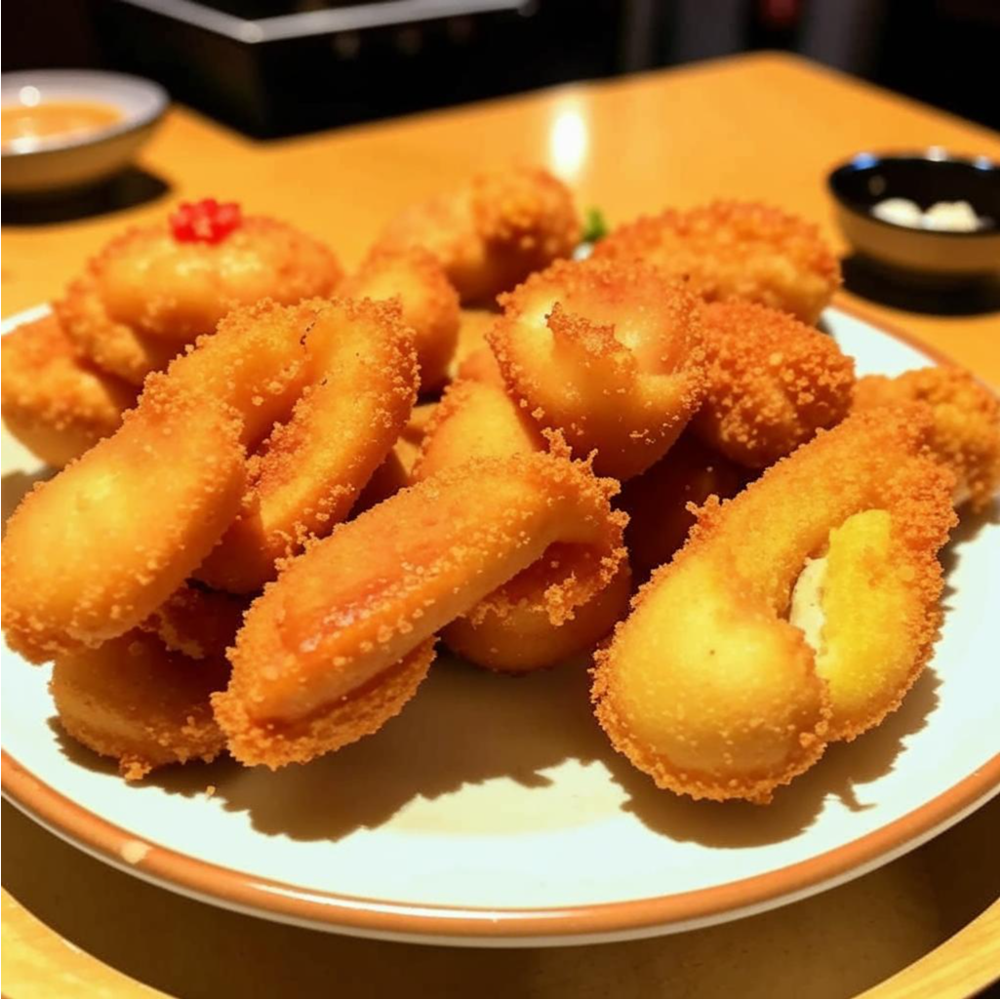
343 ₽123 гр.
ЭБИ ТЕМПУРА
Креветки, обжаренные в лёгком кляре.
Подаются с соусом для темпуры (тенцую), натертым редисом дайкон и лимоном.
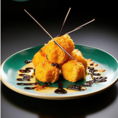
643 ₽223 гр.
ТЕМПУРА УНАГИ
Кусочки угоря, обваленные в тонком хрустящем тесте темпура и обжаренные до золотистой
корочки.
Подается с соусом тэнцую и нежным рисом.
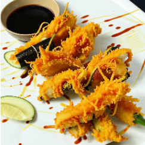
643 ₽300 гр.
ТЕМПУРА МИКС
Смесь морепродуктов, овощей и грибов, обваленных в легком тесте темпура и обжаренных до
хрустящего состояния.
Включает в себя креветки, кальмары, кабачки и шиитаке. Подается с соусом тэнцую.
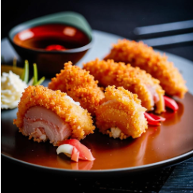
150 ₽100 гр.
МАГУРО ТЕМПУРА
Нежные кусочки свежего тунца, обваленные в хрустящем тесте темпура и обжаренные до
золотистой корочки.
Подается с маринованным имбирем и соусом тэнцую.
ЯКИТОРИ
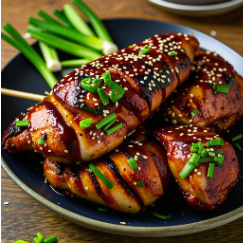
350 ₽115 гр.
ЯКИТОРИИ КАНТОРИ
Нежные кусочки курицы, пропитанные в соусе Тэрияки и обжаренные на гриле до золотистой
корочки.
Подается с кунжутом и зеленым луком.
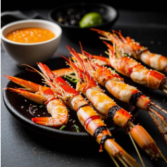
450 ₽180 гр.
ЯКИТОРИ ЭБИ
Сочные креветки, маринованные в соусе Якитори и обжаренные на гриле до хрустящего
состояния.
Подается с лимоном и соусом кунжута.
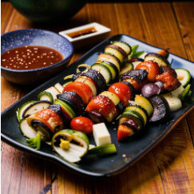
300 ₽160 гр.
ЯКИТОРИ ЯСАЙ
Ароматные овощи, такие как шампиньоны, паприка, кабачки и лук, на шпажках, обжаренные на
гриле с соусом Якитори.
Подается с соусом кунжута.
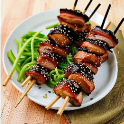
550 ₽200 гр.
ЯКИТОРИ ГЁНБИ
Запеченные шашлычки из мяса утки, пропитанные в соусе Тэрияки и приправленные имбирем.
Подается с кунжутом и зеленым луком.
СУКИЯКИ
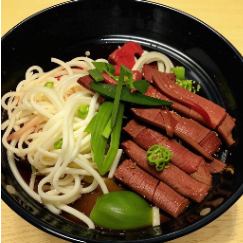
800 ₽300 гр.
СУКИЯКИ С ГЮ
Нежные ломтики говядины, тонко нарезанные тонкими луковицами и грибами Шиитаке,
обжаренные в плотном и ароматном соусе сукияки. Подается с прозрачными стеклянными
лапшами и зеленым луком.
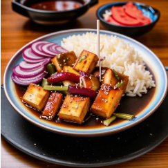
550 ₽250 гр.
СУКИЯКИ С ТОФУ
Нежные кусочки тофу, обжаренные в сукияки соусе вместе с ломтями шампиньонов,
луком и красным перцем. Подается с рисом и маринованным имбирем.
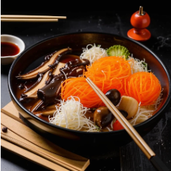
600 ₽280 гр.
СУКИЯКИ С КИНОКО
Сочные грибы Киноко, такие как шиитаке и шимидзу, обжаренные в сукияки соусе с тонкими
луковицами и кубиками топинамбура.
Подается с прозрачными стеклянными лапшами.
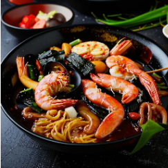
900 ₽320 гр.
СУКИЯКИ С МОРЕПРОДУКТАМИ
Сочные морепродукты, обжаренные в плотном соусе сукияки с овощами и грибами.
Подается с прозрачными стеклянными лапшами и морским водорослями.
ОКОНОМИЯКИ
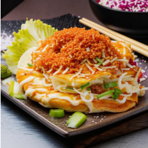
450 ₽300 гр.
КЛАССИЧЕСКИЙ ОКОНОМИЯКИ
Традиционный японский блинчик, приготовленный из теста с капустой и свининой, обжаренный
до хрустящей корочки.
Подается с соусом окономияки, майонезом, стружкой бонито и зеленым луком.
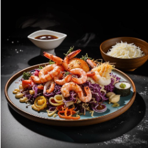
550 ₽320 гр.
ОКОНОМИЯКИ С МОРЕПРОДУКТАМИ
Нежные морепродукты, такие как креветки, кальмары и осьминог, смешанные с капустой и
тестом, обжаренные до золотистого цвета.
Подается с соусом окономияки, майонезом и нори.
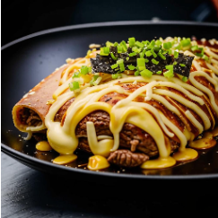
600 ₽300 гр.
ОКОНОМИЯКИ С ГОВЯДИНОЙ И СЫРОМ
Сочные кусочки говядины и расплавленный сыр, смешанные с капустой и тестом, обжаренные
до хрустящей корочки.
Подается с соусом окономияки, майонезом, стружкой бонито и зелеными водорослями.
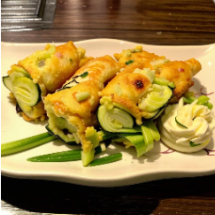
400 ₽300 гр.
ВЕГАНСКИЙ ОКОНОМИЯКИ
Свежие овощи, такие как кабачки, морковь, грибы шиитаке и капуста, смешанные с тестом и
обжаренные до золотистой корочки.
Подается с соусом окономияки, веганским майонезом и зеленым луком.